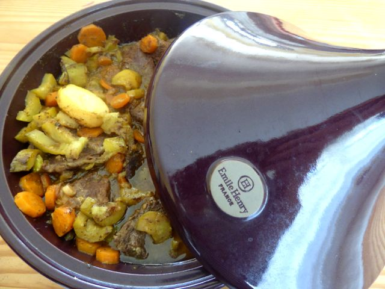

Tajine de boeuf
 2 H
2 H
 12
12
 4
4
Découpez la viande en gros cubes, épluchez et coupez les courgettes et les carottes en gros morceaux. Dans un tajine faites revenir la viande dans l'huile d'olive. Ajoutez les carottes, les courgettes, les épices, et l'ail. Salez et poivrez Laissez colorer à feu moyen.
Ajoutez un demi verre d’eau. ( les courgettes vont rendre de l'eau) Faites mijoter à feu doux, sans remuer pendant 1h. Pendant ce temps-là, coupez les tomates et les oignons en tranches.
Au bout d’1h, saupoudrez de cassonade et recouvrez le tout avec les oignons et les tomates. Faites cuire encore 1h à feu doux. Servez le tajine accompagné de semoule.